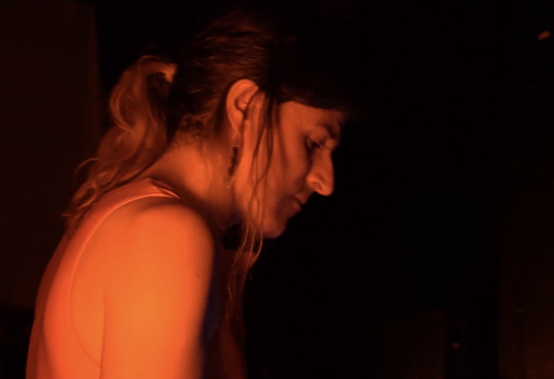

 Julianne Mosca a.k.a. VNNTX (she/they) -pronounced Venenitex- is an Argentine composer, arranger, producer, instrumentalist and computer programmer.
Based in Berlin since 2016, she currently works on experimental electronic music, combining elements of techno with industrial and atonal, and performing with a variety of drum machines, effect units, samplers and synthesizers, as well as vintage computer hardware & software.
She started her musical studies at the age of five years old, focusing on drums first and piano afterwards, graduating from the Juan Jose Castro Conservatory of Music with a major in piano performance.
As a pianist, she has concentrated on contemporary atonal chamber music works, mainly for trio (with Clarinet and Flute). Additionally she held for four years the position of piano accompanist for the wind ensemble at the J.J. Castro Conservatory of Music.
In 2009 she co-founded the 15-piece tango ensemble Orquesta El Bagre, in which she worked as arranger, composer, band-leader and pianist for three years, playing in concert venues as well as milongas for tango dancers. She simultaneously worked as an independent tango arranger writing scores for smaller groups.
During the early 2010s she has also performed frequently as part of the electronic music band Barmitzmidis, fusioning traditional Jewish music with club electronica and dance-music.
As a computer programmer she has worked in coding for embedded systems and micro controllers, as well as in the development of new computer languages, and is interested in the artistic possibilities of obsolete modern technology, often identifying, sampling, and incorporating sounds, visuals and aesthetic elements from outdated hardware and software.
Currently
she pursues her musical endeavors mainly with the groups
Supernintendo Archundia (electronica/dance), Telekinesis Elemental
(experimental improvisation with sound & movement), and as a
soloist.
A few shorts from a 2022 live performance with
Telekinesis Elemental (performing together with dancer Paula
Caldirola) can be found in the following
links:
https://mega.nz/file/dNoDwbJC#ezz4oKfstraZQ9l543qm_ZV-FxAc0TnTycQdY1PFDmU
https://mega.nz/file/MZQFmYDS#L-H0x4VBUHKe17r0Wy22Z6FRcOiL9kcoihxAKehHmkE
https://mega.nz/file/AZRWATgI#enCuWQH0lzyy9LQob8wA97yHz1xvF6nesE9JZZeQsRI
https://mega.nz/file/4Yx2XbKK#Ig5Zp9fs6VUDmVpyn5NsTJUkJN7zrJH0CL8SCygw6ck
A
longer (31 Min.) recording from a live performance at Schloss
Mühlberg from 2021 can be heard and downloaded
here:
https://mega.nz/file/ZB4F1BaK#aLIsOA6T3MlwvVADYMHpPeRbi4A2wW9D35AEJ8BIGtM
A short video titled “El Llamado del Cielo (2)” (“The Call from the Sky (2)”) can be seen here:
https://mega.nz/file/sA4AFLIQ#fD0G2KOMD_aFDnPfso3Fr2RkfO5OqNY8emwa0neuGfU
IG: vnntx_
photo & linked live videos: María Calderón